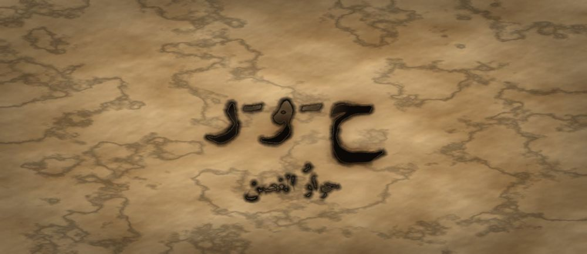

مَطبعةُ جُذور · دبي · MCMXXVI · سِلْسِلَةُ فَنِّ البَيان

مَرحلةُ الغُصْن · الفئة ١٠–١٢ · الجذر ح-و-ر · ابن رشد
❦ ✦ ❧
السِّفْرُ ١٠ — حوارُ الغصن
«أُحاوِرُكَ لِأَفْهَمَكَ، لَا لِأَغْلِبَكَ»

الرِّسَالَةُ الجَوْهَرِيَّة
الحِوارُ لَيْسَ مُبارَاةً يَرْبَحُها الأَعْلَى صَوْتًا، بَلْ مِحْوَرٌ يَدُورُ حَوْلَهُ عَقْلانِ. مَنْ يُحاوِرُ يَسْأَلُ لِيَفْهَمَ، وَيُعِيدُ صِياغَةَ كَلامِ صاحِبِهِ قَبْلَ أَنْ يَرُدَّ. وَالغُصْنُ الَّذِي تَعَلَّمَ النَّغْمَةَ وَالإِيماءَ، يَتَعَلَّمُ الآنَ أَنْ يُبادِلَ الكَلامَ لا أَنْ يَحْتَكِرَهُ.
بِطَاقَةُ هُوِيَّةِ السِّفْر
| المستوى / الدرجة | غُصْنٌ — غُصْنٌ يَمْتَدُّ (الدرجةُ الثالثةُ في مستوى الغصن) |
| الفئة العمرية | ١٠–١٢ سنة · نطاقُ تداخلٍ يمتدُّ إلى ١٣ للمتعلّمِ المتقدّم |
| الجذر الأساسي | ح – و – ر · الحِوارُ: رُجوعُ الكلامِ بينَ اثنينِ |
| أسرة الجذر | حِوار · حاوَرَ · مُحاوِر · مُحاوَرة · تَحاوُر · مِحْوَر (كلُّها من ح-و-ر) |
| المحطّة | الحِوارُ — أوّلُ تبادُلٍ منظَّمٍ بينَ ذاتينِ |
| المرساة الحسّيّة | كُرةُ الدَّوْرِ في الكفِّ: مَن أمسكَها تكلَّمَ، ومَن سلَّمَها أنصتَ |
| الاستعارة | الغصنُ الذي تعلَّمَ أن يُومئَ، يتعلَّمُ الآنَ أن يتبادلَ الظِّلَّ مع غصنٍ آخرَ |
| الشخصيتان الحكيمتان | ابنُ رُشْدٍ (فيلسوفُ الحوارِ والبرهانِ) + الجَدّةُ رملة |
| الشخصية الرمزيّة | نورُ الغصنِ (نفسُها من الأسفارِ السابقةِ — تنمو) |
| الشخصية المضادّة | الصَّدَى المُكَرِّرُ — شخصيّةٌ رمزيّةٌ (لا تاريخيّةٌ) تُعيدُ الكلامَ ولا تَفهمُهُ، ثمَّ تتعلَّمُ أن تُجيبَ |
| مؤشّرُ النموّ (وصفيٌّ للرصدِ لا بوّابةٌ) | يُعيدُ صياغةَ رأيِ محاوِرِهِ بكلماتِهِ قبلَ أن يَرُدَّ |
| مجال CASEL | مهاراتُ العلاقاتِ (Relationship Skills) |
| المرجعُ النظريّ | استرشادًا بـ TRT — نَظَرِيَّةِ القراءةِ الملموسةِ · واسترشادًا بأدبيّاتِ التعلّمِ الاجتماعيِّ العاطفيِّ |
صَاحِبُ السِّفْرِ مِنَ التُّرَاث
ابنُ رُشْدٍ (١١٢٦–١١٩٨م) فقيهٌ وقاضٍ وطبيبٌ وفيلسوفٌ من قُرْطُبةَ بالأندلسِ، اشتُهرَ بشُروحِهِ على أرسطو حتى لُقِّبَ بالشارحِ، وألَّفَ «فَصْلَ المقالِ» و«بدايةَ المجتهدِ». نستلهمُ منهُ هنا: أن يُعرَضَ الرأيُ المخالفُ بأمانةٍ وأقوى صورةٍ لهُ قبلَ مناقشتِهِ، وأنَّ البرهانَ لا الصوتَ هو فَيْصَلُ الحوارِ.
الشَّخْصِيَّةُ المُضَادَّة — الصَّدَى المُكَرِّرُ — صوتٌ يسكنُ الوادي فلا يفعلُ شيئًا سوى إعادةِ آخرِ كلمةٍ يسمعُها، فيظنُّ أنَّهُ يُحاوِرُ وهو لا يفهمُ. يتعلَّمُ في النهايةِ أن يصمتَ لحظةً قبلَ الرَّدِّ، فيولَدُ لهُ جوابٌ من عندِهِ لا نسخةٌ من كلامِ غيرِهِ.
الجَذْرُ وَأُسْرَتُه
ح-و-ر — حِوار · حاوَرَ · مُحاوِر · مُحاوَرة · تَحاوُر · مِحْوَر
الجذرُ (ح-و-ر) أجوفُ واويٌّ؛ تَظهرُ الواوُ صحيحةً في «حِوار» و«مِحْوَر»، وتُدغَمُ حركتُها في صيغةِ «حاوَرَ» على وزنِ فاعَلَ الدالِّ على المشاركةِ بينَ اثنينِ. ووزنُ «تَفاعُل» في «تَحاوُر» يفيدُ التبادُلَ المتكرّرَ؛ وهذهِ الصيغةُ وحدَها تُعلِّمُ الطفلَ أنَّ الحوارَ فِعْلُ اثنينِ لا فِعْلُ واحدٍ.
القِصَّةُ الكَامِلَة
المشهد ١ — نورُ تُتقِنُ الكلامَ، لكنَّها لا تُتقِنُ التبادُلَ
صارَتْ نورُ غُصْنًا مُمْتَدًّا. تعرفُ كيفَ تَتَنَفَّسُ، وكيفَ تُصَوِّتُ، وكيفَ تُنَغِّمُ كلامَها وتُومِئُ بيدِها. وفي حَلْقةِ الحديقةِ، تكلَّمَتْ نورُ فأحسنَتِ الكلامَ، حتى إذا فرغَتْ نظرَتْ حولَها فإذا الوجوهُ ساكنةٌ. قالَتْ في نفسِها: «قُلْتُ كُلَّ ما عِنْدِي... فَلِمَ أَشْعُرُ أَنِّي كُنْتُ وَحْدِي؟» ثمَّ تكلَّمَ صديقُها عن رأيٍ يُخالِفُها، فوجدَتْ لسانَها يسبقُها: «لا! أنتَ لَمْ تَفْهَمْ!» وقالتْها قبلَ أن يُتِمَّ جملتَهُ. فسكتَ الصديقُ، وانطفأَتِ الحَلْقةُ كما تنطفئُ شمعةٌ في هواءٍ. مشَتْ نورُ إلى الجَدّةِ رملةَ وقالتْ: «يا جَدّةُ، أنا أُحْسِنُ الكَلامَ... لكِنِّي لا أُحْسِنُ شَيْئًا آخَرَ لا أَعْرِفُ اسْمَهُ.» ابتسمَتِ الجَدّةُ وقالتْ: «اسْمُهُ الحِوارُ يا نُورُ. وَهُوَ لَيْسَ كَلامًا أَكْثَرَ، بَلْ كَلامًا يَذْهَبُ وَيَعُودُ.»
المشهد ٢ — الصَّدَى المُكَرِّرُ يوهِمُها أنَّ الرَّدَّ السريعَ هو الحوارُ
نزلَتْ نورُ إلى الوادي لتُفَكِّرَ. قالتْ بصوتٍ عالٍ: «أُرِيدُ أَنْ أَفْهَمَ!» فعادَ إليها من بينِ الصخورِ صوتٌ: «أَنْ أَفْهَمَ... أَفْهَمَ... فْهَمَ...» فقالتْ: «مَنْ أَنْتَ؟» فأجابَ: «أَنْتَ... أَنْتَ... نْتَ...» ذلكَ هوَ الصَّدَى المُكَرِّرُ. كانَ يخافُ في داخلِهِ ألَّا يكونَ عندَهُ ما يقولُهُ، فتعلَّمَ أن يَرُدَّ بسرعةٍ حتى لا يَنْكَشِفَ فراغُهُ. قالَ لها الصَّدَى مُفْتَخِرًا: «أَنَا أَسْرَعُ مُحاوِرٍ فِي الوادِي! لا أَتْرُكُ كَلِمَةً تَمُرُّ إِلَّا رَدَدْتُها فِي الحالِ. الحِوارُ سُرْعَةٌ يا نُورُ، مَنْ سَكَتَ خَسِرَ!» فأعجبَها ذلكَ أوّلًا، وجرَّبَتْ طريقتَهُ يومًا كاملًا: تَرُدُّ قبلَ أن تسمعَ، وتُجيبُ قبلَ أن تفهمَ. وفي المساءِ كانتْ متعبةً جدًّا، ولم تكنْ قد تعلَّمَتْ شيئًا واحدًا جديدًا. فقالتْ: «رَدَدْتُ كَثِيرًا... وَلَمْ أَلْتَقِ بِأَحَدٍ.»
المشهد ٣ — ابنُ رُشْدٍ يُعطيها قاعدةَ المِحْوَرِ
جلسَ في ظلِّ زيتونةٍ رجلٌ عليهِ سِيماءُ القاضي وكُتُبُهُ حولَهُ: ابنُ رُشْدٍ. ومعَهُ الجَدّةُ رملةُ كعادتِها. قالَ لها: «يا نُورُ، انْظُرِي إِلَى الرَّحَى: لَها حَجَرانِ، وَبَيْنَهُما مِحْوَرٌ. لَوْ دارَ حَجَرٌ واحِدٌ لَما طُحِنَ قَمْحٌ. وَالحِوارُ مِنَ المِحْوَرِ: كَلامٌ يَدُورُ بَيْنَ اثْنَيْنِ، فَيَخْرُجُ مِنْهُ فَهْمٌ لَمْ يَكُنْ عِنْدَ أَحَدِهِما وَحْدَهُ.» ثمَّ أعطاها قاعدةً وقالَ: «قَبْلَ أَنْ تَرُدِّي، أَعِيدِي رَأْيَ صاحِبِكِ بِكَلِماتِكِ أَنْتِ، ثُمَّ اسْأَلِيهِ: أَهَكَذا قَصَدْتَ؟ فَإِنْ قالَ نَعَمْ، فَقَدْ صارَ لَكِ حَقُّ الجَوابِ.» قالتِ الجَدّةُ رملةُ: «وَأَنا أَزِيدُكِ يا حَبِيبَتِي: لا تَرُدِّي عَلَى أَضْعَفِ ما قالَ، بَلْ عَلَى أَقْواهُ. فَمَنْ صارَعَ أَضْعَفَ كَلامِ صاحِبِهِ، فَقَدْ غَلَبَ نَفْسَهُ لا غَيْرَهُ.»
المشهد ٤ — كُرةُ الدَّوْرِ: نورُ تُمسِكُ وتُسلِّمُ
أخرجَتِ الجَدّةُ رملةُ كُرةً صغيرةً من صوفٍ ووضعَتْها أمامَ نورَ — لم تلمسْ يدَها، بل تركَتْها لِتَأْخُذَها بنفسِها. وقالتْ: «مَنْ أَمْسَكَ الكُرَةَ تَكَلَّمَ، وَمَنْ سَلَّمَها أَنْصَتَ. وَلا يُنْتَزَعُ مِنْ يَدٍ.» أخذَتْ نورُ الكُرةَ وقالتْ رأيَها في مسألةِ الحديقةِ. ثمَّ وضعَتْها على الأرضِ بينَهُما، فأخذَها صديقُها وتكلَّمَ. وشعرَتْ نورُ بشيءٍ غريبٍ: كفُّها الفارغُ صارَ يُساعِدُها على الإنصاتِ! كانتْ كُلَّما اشتاقَتْ إلى المقاطعةِ نظرَتْ إلى كفِّها الخالي فتذكَّرَتْ: «الآنَ دَوْرِي أَنْ أَفْهَمَ.» ولمَّا عادَتْ إليها الكُرةُ قالتْ: «فَهِمْتُ مِنْكَ أَنَّكَ تُرِيدُ أَنْ نَسْقِيَ الشَّجَرَةَ صَباحًا لا مَساءً، لِأَنَّ الشَّمْسَ تَشْرَبُ ماءَ المَساءِ. أَهَكَذا قَصَدْتَ؟» فاتَّسعَتْ عينا صديقِها وقالَ: «نَعَمْ! هَذا بِالضَّبْطِ ما قَصَدْتُ!» ثمَّ أضافَ: «وَالآنَ... قُولِي رَأْيَكِ، فَأَنا مُسْتَعِدٌّ لِسَماعِهِ.»
المشهد ٥ — الصَّدَى يتعلَّمُ أن يُجيبَ لا أن يُعيدَ
عادَتْ نورُ إلى الوادي ومعَها الكُرةُ. قالتْ للصَّدَى: «سَأُعْطِيكَ دَوْرًا، وَلَنْ أُقاطِعَكَ.» ثمَّ سألَتْهُ سؤالًا لا يُجابُ بالتكرارِ: «ما أَجْمَلُ شَيْءٍ رَأَيْتَهُ فِي هَذا الوادِي يا صَدَى؟» فبدأَ يقولُ: «الوادِي... وادِي...» ثمَّ توقَّفَ. لم تكنْ في السؤالِ كلمةٌ يُعيدُها. صارَ في الوادي صمتٌ طويلٌ، وارتبكَ الصَّدَى وقالَ: «لا أَعْرِفُ... لَمْ يَسْأَلْنِي أَحَدٌ مِنْ قَبْلُ. كُنْتُ أَرُدُّ بِسُرْعَةٍ لِئَلَّا يَكْتَشِفَ أَحَدٌ أَنَّ لَيْسَ عِنْدِي شَيْءٌ.» انتظرَتْ نورُ. ولم تملأِ الصمتَ. وبعدَ قليلٍ قالَ الصَّدَى بصوتٍ لم يُسمَعْ منهُ قَطُّ — صوتُهُ هوَ: «أَجْمَلُ شَيْءٍ... حِينَ يَسْكُتُ أَحَدُهُمْ لِيَنْتَظِرَنِي.» فقالتْ نورُ: «هَذا أَوَّلُ كَلامٍ لَكَ يا صَدَى، لا أَوَّلُ صَدًى.» وتعلَّمَ الصَّدَى يومَها أنَّ السكوتَ لحظةً ليسَ خسارةً، بل هوَ البابُ الذي يدخلُ منهُ جوابُهُ الخاصُّ.
المشهد ٦ — صَمْتُ السُّؤالِ الجَسَدِيِّ
وقفَتْ نورُ في آخرِ النهارِ، وفتحَتْ كفَّها فارِغًا أمامَ صدرِها، ونظرَتْ إليهِ. قالتِ الجَدّةُ رملةُ: «هَذا الكَفُّ الفارِغُ يا نُورُ هُوَ نِصْفُ الحِوارِ. وَالنِّصْفُ الآخَرُ أَنْ تَمْلَأِيهِ ثُمَّ تُفَرِّغِيهِ.» وهذا تدريبُكَ أنتَ الآنَ: «افْتَحْ كَفَّكَ وَاجْعَلْهُ فارِغًا أَمامَ صَدْرِكَ. عُدَّ فِي سِرِّكَ: واحِدٌ... اثْنانِ... ثَلاثَةٌ. قُلْ فِي نَفْسِكَ: الآنَ دَوْرُ غَيْرِي. ثُمَّ أَغْلِقْ كَفَّكَ بِهُدُوءٍ وَقُلْ: وَالآنَ دَوْرِي، وَسَأَبْدَأُ بِأَنْ أُعِيدَ ما سَمِعْتُ.» افْعَلْ هَذا بِنَفْسِكَ — كَفُّكَ لِيَدِكَ وَحْدَها، لا يُمْسِكُها أَحَدٌ. وَإِنْ أَحْبَبْتَ أَنْ تُمَرِّرَ الكُرَةَ إِلَى صاحِبِكَ فَضَعْها بَيْنَكُما عَلَى الأَرْضِ، وَلْيَأْخُذْها هُوَ إِنْ شاءَ. وَإِنِ اسْتَعْجَلْتَ يَوْمًا وَقاطَعْتَ، فَلا تَلُمْ نَفْسَكَ كَثِيرًا؛ افْتَحْ كَفَّكَ مِنْ جَدِيدٍ وَقُلْ: عُدْتُ إِلَى دَوْرِي.
النُّسْخَةُ المُخْتَصَرَة
كانَتْ نُورُ تُحْسِنُ الكَلامَ، لَكِنَّها كانَتْ تَرُدُّ قَبْلَ أَنْ تَسْمَعَ. نَزَلَتْ إِلَى الوادِي، فَقابَلَها الصَّدَى المُكَرِّرُ وَقالَ: «الحِوارُ سُرْعَةٌ! مَنْ سَكَتَ خَسِرَ!» فَجَرَّبَتْ طَرِيقَتَهُ يَوْمًا، فَتَعِبَتْ وَلَمْ تَتَعَلَّمْ شَيْئًا. قالَ لَها ابْنُ رُشْدٍ تَحْتَ الزَّيْتُونَةِ: «الحِوارُ مِنَ المِحْوَرِ، وَالمِحْوَرُ لا يَدُورُ بِحَجَرٍ واحِدٍ. أَعِيدِي رَأْيَ صاحِبِكِ بِكَلِماتِكِ، ثُمَّ اسْأَلِيهِ: أَهَكَذا قَصَدْتَ؟» وَأَعْطَتْها الجَدَّةُ رَمْلَةُ كُرَةَ الدَّوْرِ: مَنْ أَمْسَكَها تَكَلَّمَ، وَمَنْ سَلَّمَها أَنْصَتَ. فَفَعَلَتْ نُورُ، فَقالَ صاحِبُها فَرِحًا: «نَعَمْ! هَذا ما قَصَدْتُ!» ثُمَّ سَأَلَتِ الصَّدَى سُؤالًا لا يُعادُ، وَانْتَظَرَتْهُ وَلَمْ تَمْلَأِ الصَّمْتَ، فَخَرَجَ لَهُ أَوَّلُ كَلامٍ مِنْ عِنْدِهِ. وَتَعَلَّمَ الصَّدَى أَنَّ لَحْظَةَ صَمْتٍ تَلِدُ جَوابًا، وَأَنَّ سُرْعَةَ الرَّدِّ لَيْسَتْ فَهْمًا. وَفِي المَساءِ جَلَسَتْ نُورُ إِلَى الجَدَّةِ رَمْلَةَ وَقالَتْ: «كُنْتُ أَظُنُّ الحِوارَ أَنْ أَقُولَ أَحْسَنَ كَلامٍ، فَإِذا هُوَ أَنْ أَتْرُكَ مَكانًا لِكَلامِ غَيْرِي.» فَابْتَسَمَتِ الجَدَّةُ وَقالَتْ: «هَذا أَوَّلُ يَوْمٍ تُحاوِرِينَ فِيهِ حَقًّا يا نُورُ.»
المِرْسَاةُ الحِسِّيَّة
يَفْتَحُ الطِّفْلُ كَفَّهُ فارِغًا أَمامَ صَدْرِهِ وَيَعُدُّ ثَلاثًا فِي سِرِّهِ، فَيَكُونُ الكَفُّ الفارِغُ عَلامَةَ الإِنْصاتِ. ثُمَّ يُمْسِكُ كُرَةَ الدَّوْرِ بِيَدِهِ هُوَ لِيَتَكَلَّمَ، وَيَضَعُها عَلَى الأَرْضِ بَيْنَهُ وَبَيْنَ صاحِبِهِ لِيُسَلِّمَ الدَّوْرَ. كُلُّ حَرَكَةٍ يُؤَدِّيها بِنَفْسِهِ، وَلا تُنْتَزَعُ الكُرَةُ مِنْ يَدٍ أَبَدًا. الجَسَدُ هُنا يُعَلِّمُ التَّناوُبَ قَبْلَ أَنْ يُعَلِّمَهُ الكَلامُ.
العَنَاصِرُ الخَمْسَةُ لِلتَّطْبِيق
| المُخرَجُ اللُّغَويُّ | يقولُ الطفلُ قبلَ رَدِّهِ: «فَهِمْتُ مِنْكَ أَنَّ... أَهَكَذا قَصَدْتَ؟» — جملةٌ واحدةٌ تُدرَّبُ حتى تصيرَ عادةً لسانيّةً تسبقُ كلَّ اعتراضٍ. |
| الحركةُ الجسديّةُ | كُرةُ الدَّوْرِ: يُمسِكُها المتكلّمُ ويضعُها على الأرضِ حينَ يَفرغُ، فيأخذُها الآخرُ بنفسِهِ. الكفُّ الفارغُ إشارةٌ جسديّةٌ داخليّةٌ معناها: الآنَ دَوْري أن أفهمَ. |
| الدفءُ العلائقيُّ | قاعدةُ «أقوى صورةٍ»: يُعيدُ الطفلُ رأيَ محاوِرِهِ في أحسنِ صياغةٍ يقدرُ عليها قبلَ أن يُخالِفَهُ، فيشعرُ الآخرُ أنَّهُ مفهومٌ لا مُطارَدٌ. |
| البديلُ الحسّيُّ | لمن لا يريحُهُ الكلامُ: بطاقتانِ في يدِهِ، خضراءُ («أُنْصِتُ الآنَ») وزرقاءُ («أُرِيدُ دَوْرًا»)، يرفعُ إحداهُما بدلَ الصوتِ فيُحفَظُ لهُ دَوْرُهُ كاملًا. |
| الجسرُ الإنجليزيُّ | «I speak to understand you, not to defeat you.» — تُقالُ في نهايةِ الحَلْقةِ مع فتحِ الكفِّ. |
دَلِيلُ الأَهْلِ وَالمُعَلِّم
| قبل الجلسة | ضَعوا الأجهزةَ في صندوقٍ مغلقٍ، واتَّفِقوا على قاعدةٍ واحدةٍ مكتوبةٍ على ورقةٍ في وسطِ الطاولةِ: «لا نَرُدُّ قَبْلَ أَنْ نُعِيدَ.» ثمَّ اختاروا موضوعًا صغيرًا يختلفُ فيهِ البيتُ فعلًا (ترتيبُ العطلةِ مثلًا) لا موضوعًا مُفتعَلًا. |
| أثناء الجلسة | استعمِلوا كُرةَ الدَّوْرِ، وكُونوا أوّلَ مَن يُطبِّقُ القاعدةَ: أعِيدوا كلامَ ابنِكم بكلماتِكم واسألوهُ «أَهَكَذا قَصَدْتَ؟» قبلَ أن تُخالِفوهُ. لا تُصحِّحوا رأيَهُ في أثناءِ الدَّوْرِ، ولا تُكمِلوا جملتَهُ عنهُ. |
| بعد الجلسة | سجِّلوا في دفترِ البيتِ سطرًا واحدًا: «ما الرَّأْيُ الَّذِي فَهِمْتُهُ اليَوْمَ وَلَمْ أَكُنْ أَفْهَمُهُ أَمْسِ؟» وفي نهايةِ الأسبوعِ اقرَؤوا السطورَ معًا. المقصودُ رصدُ الفهمِ لا مقارنةُ الأبناءِ. |
مُؤَشِّرَاتُ الرَّصْدِ الوَصْفِيَّة
| ما تُلاحِظُه | ماذا يعني |
|---|---|
| يُعيدُ صياغةَ رأيِ محاوِرِهِ قبلَ أن يَرُدَّ | بدأَ الإنصاتُ يتحوَّلُ عندَهُ من انتظارِ الدَّوْرِ إلى معالجةِ المعنى؛ مؤشّرٌ وصفيٌّ على نُضجِ التبادُلِ. |
| يحتملُ صمتَ ثانيتينِ قبلَ الجوابِ دونَ توتُّرٍ | يتراجعُ الاندفاعُ اللفظيُّ، وتظهرُ مساحةٌ للتفكيرِ بينَ السماعِ والكلامِ. |
| يسألُ سؤالًا استيضاحيًّا بدلَ الاعتراضِ المباشرِ | يميلُ إلى الفهمِ قبلَ الحكمِ؛ علامةٌ على انتقالِ الحوارِ من مغالبةٍ إلى استكشافٍ. |
| يُسلِّمُ الدَّوْرَ من نفسِهِ دونَ تذكيرٍ | استُدخِلَتْ قاعدةُ التناوُبِ فصارَتْ داخليّةً لا خارجيّةً. وهذا وصفٌ لِما نراهُ، لا شرطًا للانتقالِ إلى السِّفرِ التالي. |
مُفْرَدَاتُ السِّفْر
| الكلمة | المعنى |
|---|---|
| حِوارٌ | كلامٌ يذهبُ ويعودُ بينَ اثنينِ |
| مِحْوَرٌ | العودُ الذي يدورُ حولَهُ الشيءُ فلا يسقطُ |
| مُحاوِرٌ | مَن يُبادِلُكَ الكلامَ ويُصغي لكَ |
| تَحاوُرٌ | أن يتبادلَ اثنانِ الكلامَ بالتناوُبِ |
| اسْتِيضاحٌ | أن تسألَ لتتأكَّدَ أنَّكَ فهمتَ |
| مُقاطَعَةٌ | أن تقطعَ كلامَ غيرِكَ قبلَ أن يُتِمَّهُ |
الجِسْرُ الإِنْجْلِيزِيّ
| عربي | English |
|---|---|
| حِوارٌ | dialogue |
| مِحْوَرٌ | axis / pivot |
| أُنْصِتُ الآنَ | I am listening now |
| أَهَكَذا قَصَدْتَ؟ | Is that what you meant? |
| دَوْرِي · دَوْرُكَ | my turn · your turn |
| أُحاوِرُكَ لِأَفْهَمَكَ | I speak with you to understand you |
أَسْئِلَةُ الفَهْم
- لِماذا تَعِبَتْ نُورُ حِينَ جَرَّبَتْ طَرِيقَةَ الصَّدَى يَوْمًا كامِلًا؟ (تذكُّر)
- لِماذا لَمْ يَسْتَطِعِ الصَّدَى أَنْ يُجِيبَ عَنْ سُؤالِ نُورَ الأَخِيرِ؟ (استنتاج)
- افْتَحْ كَفَّكَ فارِغًا وَعُدَّ ثَلاثًا، ثُمَّ أَغْلِقْهُ: ماذا شَعَرْتَ فِي اللَّحْظَةِ الفارِغَةِ؟ (سؤالٌ حسّيٌّ حركيٌّ)
- مَتَى كانَ آخِرُ مَرَّةٍ أَعادَ فِيها أَحَدٌ كَلامَكَ بِكَلِماتِهِ فَشَعَرْتَ أَنَّكَ مَفْهُومٌ؟ (ربطٌ شخصيٌّ)
نَشَاطٌ وَوَسَائِط
| نشاطٌ فنّيّ | «خريطةُ المِحْوَرِ»: يرسمُ المتعلّمُ دائرتينِ متلامستينِ، في كلٍّ منهما رأيٌ، وفي نقطةِ التماسِّ يكتبُ ما اتَّفقا عليهِ فعلًا. ثمَّ يُلوِّنُ منطقةَ التماسِّ بلونٍ ثالثٍ ليسَ لونَ أيٍّ منهما — لأنَّ الفهمَ المشتركَ شيءٌ جديدٌ لم يكنْ عندَ أحدِهِما وحدَهُ. |
| نشاطٌ تمثيليّ | «مسرحُ الأدوارِ المقلوبةِ»: يتناظرُ اثنانِ في مسألةٍ بسيطةٍ، ثمَّ تُقلَبُ الأدوارُ فيدافعُ كلٌّ عن رأيِ صاحبِهِ بأقوى صورةٍ. لا فائزَ ولا تصويتَ على الأفضلِ؛ السؤالُ الوحيدُ في النهايةِ: «ماذا فَهِمْتَ عَنْ صاحِبِكَ وَلَمْ تَكُنْ تَعْرِفُهُ؟» |
جِسْرُ الذَّاكِرَة
إلى الوراءِ — السِّفرُ التاسعُ («إيماءُ الغصنِ»): تعلَّمْتَ أن جسدَكَ يتكلَّمُ قبلَ لسانِكَ؛ والآنَ تعلَّمْتَ أنَّ الإيماءَ نفسَهُ يُسلِّمُ الدَّوْرَ ويستقبلُهُ. إلى الأمامِ — السِّفرُ الحادي عشرَ («عُذرُ الغصنِ»): كلُّ حوارٍ صادقٍ سيكشفُ يومًا أنَّكَ أخطأْتَ في شيءٍ؛ وحينَها لا يُنقِذُ الحوارَ إلَّا اعتذارٌ يعرفُ كيفَ يُقالُ. فَالحِوارُ يَفْتَحُ البابَ، وَالِاعْتِذارُ يُبْقِيهِ مَفْتُوحًا بَعْدَ الزَّلَّةِ.
قَائِمَةُ التَّحَقُّق
- الجذرُ (ح-و-ر) صحيحٌ صرفيًّا، وأسرتُهُ معروضةٌ بدقّةٍ، والصلةُ بينَ «الحِوارِ» و«المِحْوَرِ» مشروحةٌ للمعلّمِ دونَ إثقالٍ على المتعلّمِ.
- الشخصيّةُ التراثيّةُ (ابنُ رُشْدٍ) موثَّقةٌ تاريخيًّا بهامشٍ صحيحٍ، والصَّدَى موسومٌ صراحةً بأنَّهُ رمزيٌّ لا تاريخيٌّ.
- الشخصيّةُ المضادّةُ تتحوَّلُ ولا تُشيطَنُ ولا تُهزَمُ، وتحوُّلُها نابعٌ من خوفٍ مفهومٍ لا من شرٍّ.
- كلُّ حركةٍ في المرساةِ يؤدّيها المتعلّمُ بنفسِهِ؛ لا لمسَ من المرافقِ، ولا انتزاعَ لكُرةِ الدَّوْرِ من يدٍ، وأيُّ تلامُسٍ اختياريٌّ بموافقةٍ صريحةٍ.
- المؤشّراتُ الأربعةُ وصفيّةٌ للرصدِ فقط، خاليةٌ من أيِّ صيغةِ بوّابةٍ أو منعٍ من الانتقالِ، وخاليةٌ من المقارنةِ بينَ المتعلّمينَ.
- الإسنادُ المرجعيُّ مكتوبٌ بصيغةِ «استرشادًا بـ TRT — نَظَرِيَّةِ القراءةِ الملموسةِ» بلا أيِّ ادّعاءِ اعتمادٍ أو مطابقةٍ لأطرٍ دوليّةٍ، والتشكيلُ مدقَّقٌ على كلِّ نصٍّ موجَّهٍ للمتعلّمِ.

مَطبعةُ جُذور · دبي · MCMXXVI · صمّمه وطوّره د. عادل ف. عامر
Designed and developed by Dr. Adel F. Amer · Amer (2024) · CC BY-NC-SA 4.0
↤ عودةٌ إلى خِزانةِ الأسفار